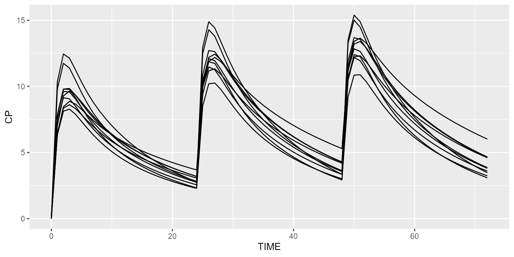
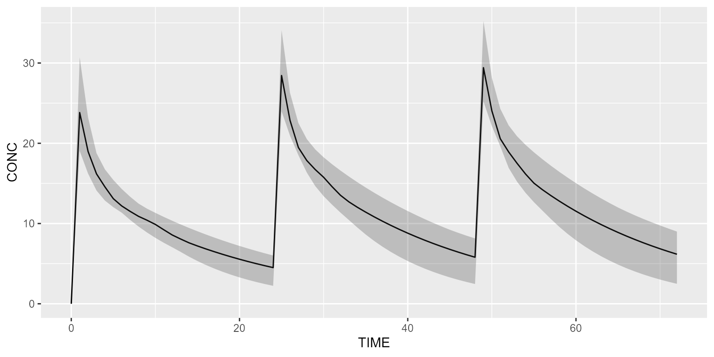
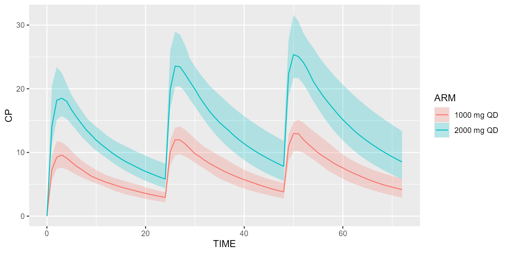

Load 2-compartment PK model from built-in model library:
model <- model_library$advan4_trans4Create your dataset in CAMPSIS. For instance, let’s give 1000mg QD for 3 days and observe every hour.
dataset <- Dataset(10) %>%
add(Bolus(time=c(0,24,48), amount=1000)) %>%
add(Observations(times=seq(0,72, by=1)))Simulate this very simple protocol:
## # A tibble: 6 x 17
## ID TIME ARM KA CL V2 V3 Q S2 F CP OBS_CP Y
## <int> <dbl> <dbl> <dbl> <dbl> <dbl> <dbl> <dbl> <dbl> <dbl> <dbl> <dbl> <dbl>
## 1 1 0 0 0.974 6.20 92.5 25.4 3.62 92.5 0 0 0 0
## 2 1 1 0 0.974 6.20 92.5 25.4 3.62 92.5 6.34 6.34 5.42 5.42
## 3 1 2 0 0.974 6.20 92.5 25.4 3.62 92.5 8.12 8.12 9.14 9.14
## 4 1 3 0 0.974 6.20 92.5 25.4 3.62 92.5 8.28 8.28 10.4 10.4
## 5 1 4 0 0.974 6.20 92.5 25.4 3.62 92.5 7.89 7.89 8.13 8.13
## 6 1 5 0 0.974 6.20 92.5 25.4 3.62 92.5 7.35 7.35 10.2 10.2
## # ... with 4 more variables: A_DEPOT <dbl>, A_CENTRAL <dbl>,
## # A_PERIPHERAL <dbl>, A_OUTPUT <dbl>Plot these results:
spaghettiPlot(results, "CP")
A shaded plot may also be used:
shadedPlot(results, "CP")
We can also simulate two different treatment arms. Say the first arm receives 1000mg QD and the second arm 2000mg QD.
arm1 <- Arm(subjects=50, label="1000 mg QD")
arm2 <- Arm(subjects=50, label="2000 mg QD")
arm1 <- arm1 %>% add(Bolus(time=c(0,24,48), amount=1000))
arm1 <- arm1 %>% add(Observations(times=seq(0,72, by=1)))
arm2 <- arm2 %>% add(Bolus(time=c(0,24,48), amount=2000))
arm2 <- arm2 %>% add(Observations(times=seq(0,72, by=1)))
dataset <- Dataset() %>% add(c(arm1, arm2))
results <- model %>% simulate(dataset, dest="RxODE", seed=1)
shadedPlot(results, "CP", scenarios="ARM")